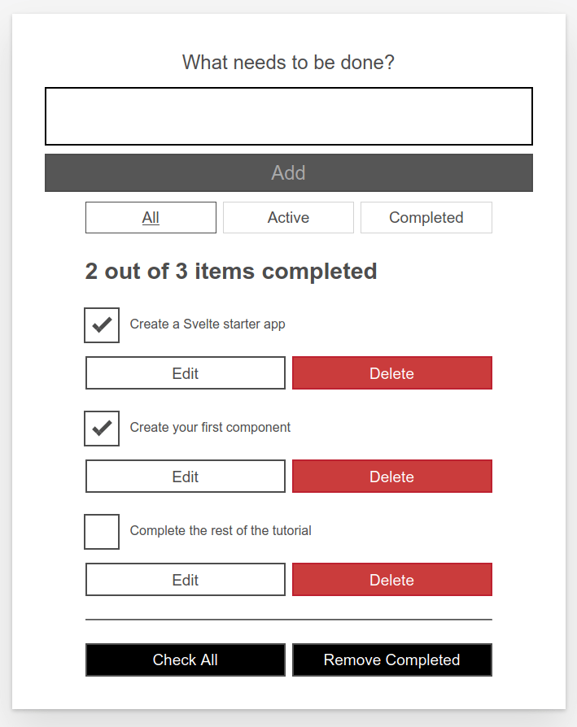
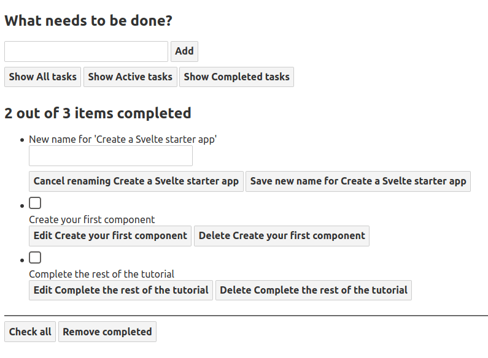
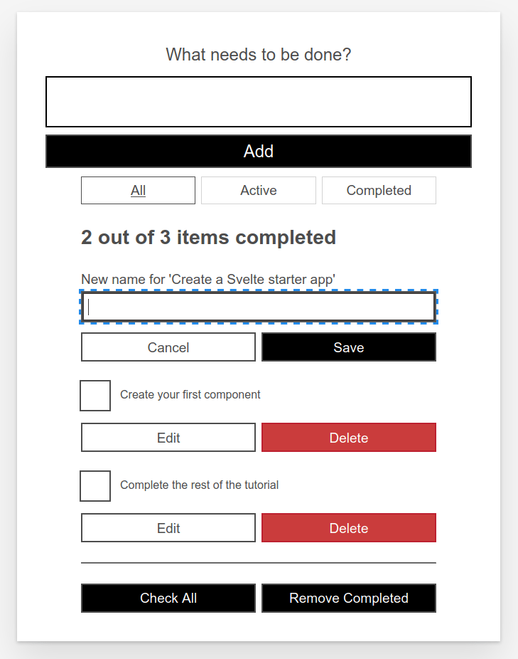

Starting our Svelte to-do list app
Now that we have a basic understanding of how things work in Svelte, we can start building our example app: a to-do list. In this article we will first have a look at the desired functionality of our app, and then we'll create a Todos.svelte component and put static markup and styles in place, leaving everything ready to start developing our to-do list app features, which we'll go on to in subsequent articles.
We want our users to be able to browse, add and delete tasks, and also to mark them as complete. This will be the basic functionality that we'll be developing in this tutorial series, and we'll look at some more advanced concepts along the way too.
| Prerequisites: |
At minimum, it is recommended that you are familiar with the core HTML, CSS, and JavaScript languages, and have knowledge of the terminal/command line. You'll need a terminal with node + npm installed to compile and build your app. |
|---|---|
| Objective: | To learn how to create a Svelte component, render it inside another component, pass data into it using props, and save its state. |
Code along with us
Git
Clone the GitHub repo (if you haven't already done it) with:
git clone https://github.com/opensas/mdn-svelte-tutorial.git
Then to get to the current app state, run
cd mdn-svelte-tutorial/02-starting-our-todo-app
Or directly download the folder's content:
npx degit opensas/mdn-svelte-tutorial/02-starting-our-todo-app
Remember to run npm install && npm run dev to start your app in development mode.
REPL
To code along with us using the REPL, start at
https://svelte.dev/repl/b7b831ea3a354d3789cefbc31e2ca495?version=3.23.2
To-do list app features
This is what our to-do list app will look like once it's ready:

Using this UI our user will be able to:
- Browse their tasks
- Mark tasks as completed/pending without deleting them
- Remove tasks
- Add new tasks
- Filter tasks by status: all tasks, active tasks, or completed tasks
- Edit tasks
- Mark all tasks as active/completed
- Remove all completed tasks
Building our first component
Let's create a Todos.svelte component. This will contain our list of to-dos.
- Create a new folder —
src/components.Note: You can put your components anywhere inside the
srcfolder, but thecomponentsfolder is a recognized convention to follow, allowing you to find your components easily. - Create a file named
src/components/Todos.sveltewith the following content:<h1>Svelte to-do list</h1> - Change the
titleelement inpublic/index.htmlto contain the text Svelte to-do list:<title>Svelte to-do list</title> - Open
src/App.svelteand replace its contents with the following:<script> import Todos from "./components/Todos.svelte"; </script> <Todos /> - In development mode, Svelte will issue a warning in the browser console when specifying a prop that doesn't exist in the component; in this case we have a
nameprop being specified when we instantiate theAppcomponent insidesrc/main.js, which isn't used insideApp. The console should currently give you a message along the lines of "<App> was created with unknown prop 'name'". To get rid of this, remove thenameprop fromsrc/main.js; it should now look like so:import App from "./App.svelte"; const app = new App({ target: document.body, }); export default app;
Now if you check your testing server URL you'll see our Todos.svelte component being rendered:

Adding static markup
For the moment we will start with a static markup representation of our app, so you can see what it will look like. Copy and paste the following into our Todos.svelte component file, replacing the existing content:
<!-- Todos.svelte -->
<div class="todoapp stack-large">
<!-- NewTodo -->
<form>
<h2 class="label-wrapper">
<label for="todo-0" class="label__lg"> What needs to be done? </label>
</h2>
<input type="text" id="todo-0" autocomplete="off" class="input input__lg" />
<button type="submit" disabled="" class="btn btn__primary btn__lg">
Add
</button>
</form>
<!-- Filter -->
<div class="filters btn-group stack-exception">
<button class="btn toggle-btn" aria-pressed="true">
<span class="visually-hidden">Show</span>
<span>All</span>
<span class="visually-hidden">tasks</span>
</button>
<button class="btn toggle-btn" aria-pressed="false">
<span class="visually-hidden">Show</span>
<span>Active</span>
<span class="visually-hidden">tasks</span>
</button>
<button class="btn toggle-btn" aria-pressed="false">
<span class="visually-hidden">Show</span>
<span>Completed</span>
<span class="visually-hidden">tasks</span>
</button>
</div>
<!-- TodosStatus -->
<h2 id="list-heading">2 out of 3 items completed</h2>
<!-- Todos -->
<ul role="list" class="todo-list stack-large" aria-labelledby="list-heading">
<!-- todo-1 (editing mode) -->
<li class="todo">
<div class="stack-small">
<form class="stack-small">
<div class="form-group">
<label for="todo-1" class="todo-label">
New name for 'Create a Svelte starter app'
</label>
<input
type="text"
id="todo-1"
autocomplete="off"
class="todo-text" />
</div>
<div class="btn-group">
<button class="btn todo-cancel" type="button">
Cancel
<span class="visually-hidden">renaming Create a Svelte starter app</span>
</button>
<button class="btn btn__primary todo-edit" type="submit">
Save
<span class="visually-hidden">new name for Create a Svelte starter app</span>
</button>
</div>
</form>
</div>
</li>
<!-- todo-2 -->
<li class="todo">
<div class="stack-small">
<div class="c-cb">
<input type="checkbox" id="todo-2" checked />
<label for="todo-2" class="todo-label">
Create your first component
</label>
</div>
<div class="btn-group">
<button type="button" class="btn">
Edit
<span class="visually-hidden">Create your first component</span>
</button>
<button type="button" class="btn btn__danger">
Delete
<span class="visually-hidden">Create your first component</span>
</button>
</div>
</div>
</li>
<!-- todo-3 -->
<li class="todo">
<div class="stack-small">
<div class="c-cb">
<input type="checkbox" id="todo-3" />
<label for="todo-3" class="todo-label">
Complete the rest of the tutorial
</label>
</div>
<div class="btn-group">
<button type="button" class="btn">
Edit
<span class="visually-hidden">Complete the rest of the tutorial</span>
</button>
<button type="button" class="btn btn__danger">
Delete
<span class="visually-hidden">Complete the rest of the tutorial</span>
</button>
</div>
</div>
</li>
</ul>
<hr />
<!-- MoreActions -->
<div class="btn-group">
<button type="button" class="btn btn__primary">Check all</button>
<button type="button" class="btn btn__primary">Remove completed</button>
</div>
</div>
Check the rendered out again, and you'll see something like this:

The HTML markup above is not very nicely styled and it's also functionally useless. Nevertheless, let's have a look at the markup and see how it relates to our desired features:
- A label and a text box for entering new tasks
- Three buttons to filter by task status
- A label showing the total number of tasks and the completed tasks
- An unordered list, which holds a list item for each task
- When the task is being edited, the list item has an input and two button to cancel or save modifications
- If the task is not being edited, there's a checkbox to set the completed status, and two buttons to edit or delete the task
- Finally there are two buttons to check/uncheck all task and to remove completed tasks
In subsequent articles we'll get all these features working, and more besides.
Accessibility features of the to-do list
You may notice some unusual attributes here. For example:
<button class="btn toggle-btn" aria-pressed="true">
<span class="visually-hidden">Show</span>
<span>All</span>
<span class="visually-hidden">tasks</span>
</button>
Here, aria-pressed tells assistive technology (like screen readers) that the button can be in one of two states: pressed or unpressed. Think of these as analogs for on and off. Setting a value of true means that the button is pressed by default.
The class visually-hidden has no effect yet, because we have not included any CSS. Once we have put our styles in place, though, any element with this class will be hidden from sighted users and still available to screen reader users — this is because these words are not needed by sighted users; they are there to provide more information about what the button does for screen reader users that do not have the extra visual context to help them.
Further down, you can find the following <ul> element:
<ul
role="list"
className="todo-list stack-large"
aria-labelledby="list-heading">
The role attribute helps assistive technology explain what kind of semantic value an element has — or what its purpose is. A <ul> is treated like a list by default, but the styles we're about to add will break that functionality. This role will restore the "list" meaning to the <ul> element. If you want to learn more about why this is necessary, you can check out Scott O'Hara's article "Fixing Lists".
The aria-labelledby attribute tells assistive technologies that we're treating our <h2> with an id of list-heading as the label that describes the purpose of the list beneath it. Making this association gives the list a more informative context, which could help screen reader users better understand the purpose of it.
This seems like a good time to talk about how Svelte deals with accessibility; let's do that now.
Svelte accessibility support
Svelte has a special emphasis on accessibility. The intention is to encourage developers to write more accessible code "by default". Being a compiler, Svelte can statically analyze our HTML templates to provide accessibility warnings when components are being compiled.
Accessibility (shortened to a11y) isn't always easy to get right, but Svelte will help by warning you if you write inaccessible markup.
For example, if we add an <img> element to our todos.svelte component without its corresponding alt prop:
<h1>Svelte To-Do list</h1>
<img height="32" width="88" src="https://www.w3.org/WAI/wcag2A" />
The compiler will issue the following warning:
(!) Plugin svelte: A11y: <img> element should have an alt attribute
src/components/Todos.svelte
1: <h1>Svelte To-Do list</h1>
2:
3: <img height="32" width="88" src="https://www.w3.org/WAI/wcag2A">
^
created public/build/bundle.js in 220ms
[2020-07-15 04:07:43] waiting for changes...
Moreover, our editor can display this warning even before calling the compiler:

You can tell Svelte to ignore this warning for the next block of markup with a comment beginning with svelte-ignore, like this:
<!-- svelte-ignore a11y-missing-attribute -->
<img height="32" width="88" src="https://www.w3.org/WAI/wcag2A" />
Note: With VSCode you can automatically add this ignore comment by clicking on the Quick fix… link or pressing Ctrl + ..
If you want to globally disable this warning, you can add this onwarn handler to your rollup.config.js file inside the configuration for the Svelte plugin, like this:
plugins: [
svelte({
dev: !production,
css: (css) => {
css.write("public/build/bundle.css");
},
// Warnings are normally passed straight to Rollup. You can
// optionally handle them here, for example to squelch
// warnings with a particular code
onwarn: (warning, handler) => {
// e.g. I don't care about screen readers -> please DON'T DO THIS!!!
if (warning.code === "a11y-missing-attribute") {
return;
}
// let Rollup handle all other warnings normally
handler(warning);
},
}),
// …
];
By design, these warnings are implemented in the compiler itself, and not as a plug-in that you may choose to add to your project. The idea is to check for a11y issues in your markup by default and let you opt out of specific warnings.
Note: You should only disable these warnings if you have good reasons to do so, for example while building a quick prototype. It's important to be a good web citizen and make your pages accessible to the broadest possible userbase.
The accessibility rules checked by Svelte are taken from eslint-plugin-jsx-a11y, a plugin for ESLint that provides static checks for many accessibility rules on JSX elements. Svelte aims to implement all of them in its compiler, and most of them have already been ported to Svelte. On GitHub you can see which accessibility checks are still missing. You can check the meaning of each rule by clicking on its link.
Styling our markup
Let's make the to-do list look a little better. Replace the contents of the file public/global.css with the following:
/* RESETS */
*,
*::before,
*::after {
box-sizing: border-box;
}
*:focus {
outline: 3px dashed #228bec;
outline-offset: 0;
}
html {
font: 62.5% / 1.15 sans-serif;
}
h1,
h2 {
margin-bottom: 0;
}
ul {
list-style: none;
padding: 0;
}
button {
border: none;
margin: 0;
padding: 0;
width: auto;
overflow: visible;
background: transparent;
color: inherit;
font: inherit;
line-height: normal;
-webkit-font-smoothing: inherit;
-moz-osx-font-smoothing: inherit;
appearance: none;
}
button::-moz-focus-inner {
border: 0;
}
button,
input,
optgroup,
select,
textarea {
font-family: inherit;
font-size: 100%;
line-height: 1.15;
margin: 0;
}
button,
input {
overflow: visible;
}
input[type="text"] {
border-radius: 0;
}
body {
width: 100%;
max-width: 68rem;
margin: 0 auto;
font: 1.6rem/1.25 Arial, sans-serif;
background-color: #f5f5f5;
color: #4d4d4d;
}
@media screen and (min-width: 620px) {
body {
font-size: 1.9rem;
line-height: 1.31579;
}
}
/*END RESETS*/
/* GLOBAL STYLES */
.form-group > input[type="text"] {
display: inline-block;
margin-top: 0.4rem;
}
.btn {
padding: 0.8rem 1rem 0.7rem;
border: 0.2rem solid #4d4d4d;
cursor: pointer;
text-transform: capitalize;
}
.btn.toggle-btn {
border-width: 1px;
border-color: #d3d3d3;
}
.btn.toggle-btn[aria-pressed="true"] {
text-decoration: underline;
border-color: #4d4d4d;
}
.btn__danger {
color: #fff;
background-color: #ca3c3c;
border-color: #bd2130;
}
.btn__filter {
border-color: lightgrey;
}
.btn__primary {
color: #fff;
background-color: #000;
}
.btn__primary:disabled {
color: darkgrey;
background-color: #565656;
}
.btn-group {
display: flex;
justify-content: space-between;
}
.btn-group > * {
flex: 1 1 49%;
}
.btn-group > * + * {
margin-left: 0.8rem;
}
.label-wrapper {
margin: 0;
flex: 0 0 100%;
text-align: center;
}
.visually-hidden {
position: absolute !important;
height: 1px;
width: 1px;
overflow: hidden;
clip: rect(1px 1px 1px 1px);
clip: rect(1px, 1px, 1px, 1px);
white-space: nowrap;
}
[class*="stack"] > * {
margin-top: 0;
margin-bottom: 0;
}
.stack-small > * + * {
margin-top: 1.25rem;
}
.stack-large > * + * {
margin-top: 2.5rem;
}
@media screen and (min-width: 550px) {
.stack-small > * + * {
margin-top: 1.4rem;
}
.stack-large > * + * {
margin-top: 2.8rem;
}
}
.stack-exception {
margin-top: 1.2rem;
}
/* END GLOBAL STYLES */
.todoapp {
background: #fff;
margin: 2rem 0 4rem 0;
padding: 1rem;
position: relative;
box-shadow: 0 2px 4px 0 rgba(0, 0, 0, 0.2), 0 2.5rem 5rem 0 rgba(0, 0, 0, 0.1);
}
@media screen and (min-width: 550px) {
.todoapp {
padding: 4rem;
}
}
.todoapp > * {
max-width: 50rem;
margin-left: auto;
margin-right: auto;
}
.todoapp > form {
max-width: 100%;
}
.todoapp > h1 {
display: block;
max-width: 100%;
text-align: center;
margin: 0;
margin-bottom: 1rem;
}
.label__lg {
line-height: 1.01567;
font-weight: 300;
padding: 0.8rem;
margin-bottom: 1rem;
text-align: center;
}
.input__lg {
padding: 2rem;
border: 2px solid #000;
}
.input__lg:focus {
border-color: #4d4d4d;
box-shadow: inset 0 0 0 2px;
}
[class*="__lg"] {
display: inline-block;
width: 100%;
font-size: 1.9rem;
}
[class*="__lg"]:not(:last-child) {
margin-bottom: 1rem;
}
@media screen and (min-width: 620px) {
[class*="__lg"] {
font-size: 2.4rem;
}
}
.filters {
width: 100%;
margin: unset auto;
}
/* Todo item styles */
.todo {
display: flex;
flex-direction: row;
flex-wrap: wrap;
}
.todo > * {
flex: 0 0 100%;
}
.todo-text {
width: 100%;
min-height: 4.4rem;
padding: 0.4rem 0.8rem;
border: 2px solid #565656;
}
.todo-text:focus {
box-shadow: inset 0 0 0 2px;
}
/* CHECKBOX STYLES */
.c-cb {
box-sizing: border-box;
font-family: Arial, sans-serif;
-webkit-font-smoothing: antialiased;
font-weight: 400;
font-size: 1.6rem;
line-height: 1.25;
display: block;
position: relative;
min-height: 44px;
padding-left: 40px;
clear: left;
}
.c-cb > label::before,
.c-cb > input[type="checkbox"] {
box-sizing: border-box;
top: -2px;
left: -2px;
width: 44px;
height: 44px;
}
.c-cb > input[type="checkbox"] {
-webkit-font-smoothing: antialiased;
cursor: pointer;
position: absolute;
z-index: 1;
margin: 0;
opacity: 0;
}
.c-cb > label {
font-size: inherit;
font-family: inherit;
line-height: inherit;
display: inline-block;
margin-bottom: 0;
padding: 8px 15px 5px;
cursor: pointer;
touch-action: manipulation;
}
.c-cb > label::before {
content: "";
position: absolute;
border: 2px solid currentcolor;
background: transparent;
}
.c-cb > input[type="checkbox"]:focus + label::before {
border-width: 4px;
outline: 3px dashed #228bec;
}
.c-cb > label::after {
box-sizing: content-box;
content: "";
position: absolute;
top: 11px;
left: 9px;
width: 18px;
height: 7px;
transform: rotate(-45deg);
border: solid;
border-width: 0 0 5px 5px;
border-top-color: transparent;
opacity: 0;
background: transparent;
}
.c-cb > input[type="checkbox"]:checked + label::after {
opacity: 1;
}
With our markup styled, everything now looks better:

The code so far
Git
To see the state of the code as it should be at the end of this article, access your copy of our repo like this:
cd mdn-svelte-tutorial/03-adding-dynamic-behavior
Or directly download the folder's content:
npx degit opensas/mdn-svelte-tutorial/03-adding-dynamic-behavior
Remember to run npm install && npm run dev to start your app in development mode.
REPL
To see the current state of the code in a REPL, visit:
https://svelte.dev/repl/c862d964d48d473ca63ab91709a0a5a0?version=3.23.2
Summary
In this module
- Introduction to client-side frameworks
- Framework main features
- React
- Ember
- Vue
- Getting started with Vue
- Creating our first Vue component
- Rendering a list of Vue components
- Adding a new todo form: Vue events, methods, and models
- Styling Vue components with CSS
- Using Vue computed properties
- Vue conditional rendering: editing existing to-dos
- Focus management with Vue refs
- Vue resources
- Svelte
- Angular